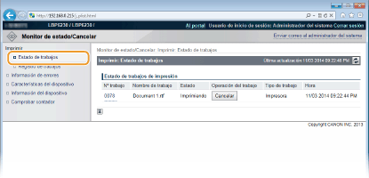
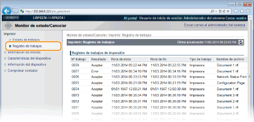
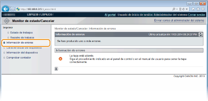
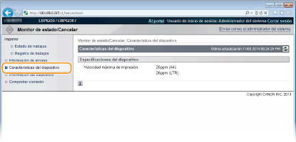
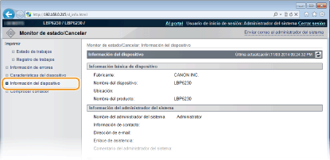
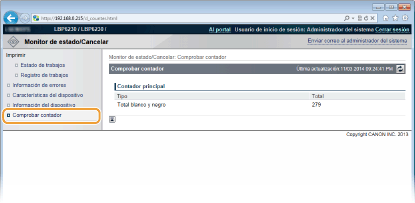

0KXF-038
|
|
|
El nombre de la aplicación que ha solicitado la impresión puede agregarse al nombre del archivo de los documentos impresos.
|
Puede consultar una lista de hasta cinco documentos que se están imprimiendo ahora o que están a la espera de imprimirse.
Inicie sesión en el IU remoto (Inicio del IU remoto)  [Monitor de estado/Cancelar] [Estado de trabajos]
[Monitor de estado/Cancelar] [Estado de trabajos]

Puede hacer clic en [Cancelar] para eliminar el trabajo de impresión de un documento que se está imprimiendo o que está a la espera de imprimirse.
|
|
|
Haga clic en [Nº trabajo] para mostrar información detallada de un documento. Por ejemplo, puede consultar el nombre de usuario o el recuento de páginas impresas del documento.
Si se produce un error, pero la impresión puede proseguir, [Continuar/Volver a intentar] aparecerá en [Operación del trabajo]. Puede hacer clic en [Continuar/Volver a intentar] para hacer desaparecer el error y reanudar la impresión. No obstante, es posible que la impresión no se realice correctamente si utiliza la función Continuar/Volver a intentar para hacer desaparecer el error y reanudar la impresión.
|
El historial muestra una lista de hasta 50 documentos impresos.
Inicie sesión en el IU remoto (Inicio del IU remoto) [Monitor de estado/Cancelar] [Registro de trabajos]

Cuando se produce un error, puede visualizar esta página haciendo clic en el mensaje que aparece en [Información de errores] en la página del portal (página principal). Página del portal (página principal)
Inicie sesión en el IU remoto (Inicio del IU remoto) [Monitor de estado/Cancelar] [Información de errores]

Esta página muestra la velocidad de impresión máxima del equipo.
Inicie sesión en el IU remoto (Inicio del IU remoto) [Monitor de estado/Cancelar] [Características del dispositivo]

Esta página muestra información sobre el equipo y el administrador del sistema. Esta información está establecida en [Gestión del sistema] en la página [Configuración] (Cambios en la configuración del equipo).
Inicie sesión en el IU remoto (Inicio del IU remoto) [Monitor de estado/Cancelar] [Información del dispositivo]

Esta página muestra el recuento total de páginas de los documentos que se han impreso.
Inicie sesión en el IU remoto (Inicio del IU remoto) [Monitor de estado/Cancelar] [Comprobar contador]
